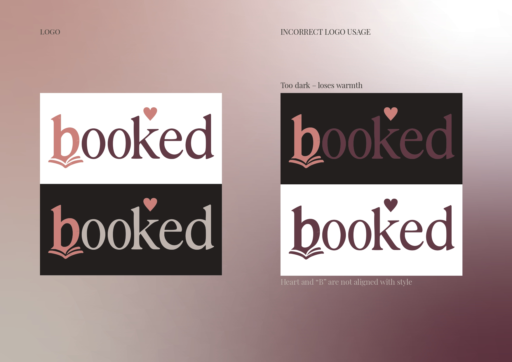
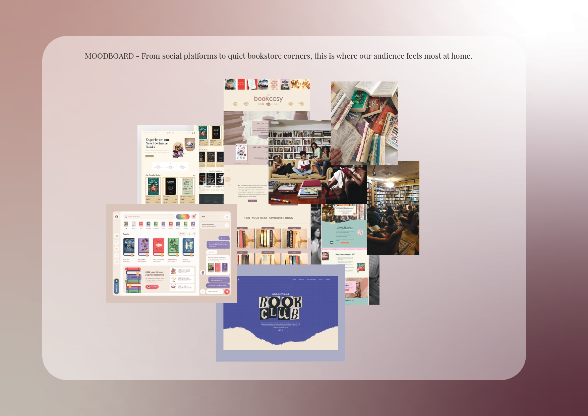
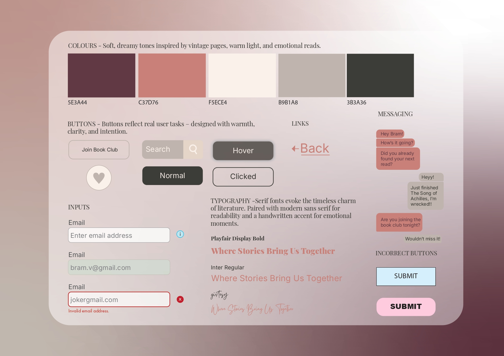

General Information
This branded website is publicly available at schreuderwouter.github.io/
This website was created by…
- Finn Verbaan (ID: 221344)
- Hana Marija Rojnik (ID: 221460)
- Ilse van Proosdij (ID: 222486)
- Wouter Schreuder (ID: 211411)
- Charonne Bonne (ID: 162567)
Content
| # | Student ID | Value | Name and link of content |
|---|---|---|---|
| 1. | 221344 | Brand values, person and vision | Content |
| 2. | 221460 | Styleguide and visual identity | Visual Identity |
| 3. | 222486 | Content, for example copywriting | Content |
| 4. | 211411 | Website and corporate page | Landing page |
| 5. | 162567 | Visuals | Visual identity |
Brand name: Booked
Booked is a play on word of the word hooked, which is used when describing you enjoy it so much that it takes up a lot of your interest and attention. This is what a lot of book enthusiasts feel when they find a new book they really enjoy.
Logo
Brand Values
Curiosity
We’re always curious for new stories that spark something in us—whether it’s a plot twist we didn’t see coming, a fantasy world we want to live in, or a romance that makes us feel all the feels. It’s that excitement of discovering something new that keeps us reaching for the next book.
Knowledge
Books help us grow. From understanding different perspectives to learning about history, love, or even ourselves—every story adds something to who we are. We believe there’s real value in what we take away from the books we read.
Community
Reading might be a solo act, but the love for books is something meant to be shared. Whether it’s through reviews, group chats, or late-night rants about cliffhangers, we’re here to connect with others who are just as passionate. This space is for conversations, recommendations, and a whole lot of book love.
Passion
In a fast, digital world, we believe reading still matters. It’s more than just a hobby—it’s something that brings joy, comfort, and meaning. We celebrate the people who make time for books and proudly carry that passion into everything we do.
Vision
In a world where reading is becoming less popular, book enthusiasts need a space where they can safely share their opinions and connect with those with the same interests.
Brand Persona
Name: Bram de Vries
Age: 21
Occupation: Literature Student, side job Librarian
Location: Utrecht, Netherlands
Background & Personality: Bram grew up in a house full of readers, with a father who used to be teacher of the Dutch language, who introduced him to both Dutch literature and international classics. He studies Literature at university and works part time as a librarian, helping others with finding great books. He’s thoughtful, intelligent, and always up for a deep discussion about books and loves coffee. He has a balanced life, dividing his time between reading, working, and enjoying evenings with friends and coffee.
Values & Beliefs:
- Curiosity: Always seeking out new authors and hidden literary gems.
- Inclusivity: Believes books should be accessible to everyone and values diverse storytelling. Lifelong Learning: Reads across different genres, from history to speculative fiction.
- Sustainability: Prefers secondhand bookstores and values book-sharing initiatives.
- Community: Active in Utrecht’s literary scene and organizes book meetups.
Appendix
InterviewsProduction
Design Elements
Style guide



Justification of design choices
-
Colour scheme
- #5E3A44 – This deep red-purple adds warmth and emotion to the site. It's perfect for things you want to stand out, like buttons or titles, and it gives off romantic, cozy vibes that fit our audience really well.
- #C37D76 This soft pinkish color feels calm and comforting. It works great for backgrounds or hover effects and helps the site feel more friendly and bookish, without being too loud.
- #B9B1A8 This light gray-brown is more neutral and helps to balance out the other colors. It’s good for things like borders or less important text, so the focus stays on what matters most.
- #3B3A36 This dark gray is used for main text because it’s clear and easy to read on lighter backgrounds. It gives the site structure and makes sure everything is readable without feeling too harsh. #F5ECE4 This beige color is super easy on the eyes and gives the site that "vintage book page" feeling. It’s a nice base color that makes everything feel soft and inviting, especially for people who spend a lot of time reading.
Font Choices (Paytone One, Futura PT Medium, Futura PT Book)
The font choices aim to create a cohesive visual identity while prioritizing readability and modern aesthetics. By using a combination of bold and lighter weights, the design ensures a harmonious balance between visual impact and legibility.
-
Primary Font - Playfair Display: This serif font has an elegant, classic feel, perfect for a book-related website. It conveys a sense of tradition and sophistication while remaining very readable for large blocks of text, like descriptions or reviews.
-
Secondary Font - Raleway: A clean, modern sans-serif font that complements the classic nature of Playfair Display. Use it for headings, buttons, or navigation menus to maintain a contemporary and approachable look.
User interface patterns (e.g. grids, carousels, menu organizations etc.)
- The use of navigation patterns such as top navigation bar was curtail due to its familiarity to users. They already know how to navigate through it which is what makes it more accessible.
- With grid view, we assure a visually appealing environment, optimise the space and consistency.
- The carousel should showcase books with high-quality images and easy navigation (arrows or dots). It should be visually appealing, intuitive, and mobile-friendly, featuring key books, new releases, or recommendations. Autoplay is helpful but users should also have manual control. The goal is to keep it dynamic and user-friendly while enhancing engagement with the site.
Credits
- this website was derived solely from the course provided template (buas-media-interactive/prj4-group-template)
- All images and icons were created by the team, within Canva.
Testing Report
3 people from our target audience helped us by testing the website, we asked the following:
What is our website for?
Would you engage with this website? Why yes or no?
And finally, we asked them what they thought about the design choices individually, colors used, logo, etc.
Findings
From the user interviews, we learned a few key things that helped us improve the website. One of the main issues was font readability—some users pointed out that the font color we used (especially on lighter backgrounds) was too hard to read. As a result, we adjusted the contrast to make sure the text stands out more and doesn’t strain the eyes.
Another point of confusion was the section originally labeled "Booked Box." Several users didn’t understand what it referred to and assumed it was a feature or subscription service. To avoid this confusion, we renamed it to "How We Work," which more clearly explains the purpose of that section and aligns better with what users expect.
These small changes already made a noticeable difference in how users navigate and experience the site, and they showed us how important it is to test early and often.
Possible improvements
A major improvement for our website would be to put more time into how the look and feel connects to our target audience—book lovers who are drawn to dreamy, emotional, and cozy aesthetics. While we did define our visual style in the style guide, we didn’t fully translate it into the actual site. More collaboration between design and development would’ve helped us stay closer to that soft, vintage, BookTok-inspired vibe we were aiming for.
During early feedback sessions, it became clear that the layout still feels a bit too basic and clean. For a platform all about emotion, connection, and storytelling, we could’ve done more to visually reflect that—think handwritten accents, softer serif fonts, and a color palette that leans into the warm tones from our style guide like F5ECE4 and C37D76. Little things like subtle background textures, book-themed icons, or reader-submitted quotes could go a long way in creating that cozy, familiar space.
We’ve already started implementing some changes, like adjusting the background color to a softer beige and playing around with typography to make things feel a bit less formal. But there’s still a lot of room to bring the vision to life more fully. Adding moodboard-inspired visuals, personal touches like “currently reading” sections, or even featured book reviews from our community would help the site feel more alive and tailored to our audience.